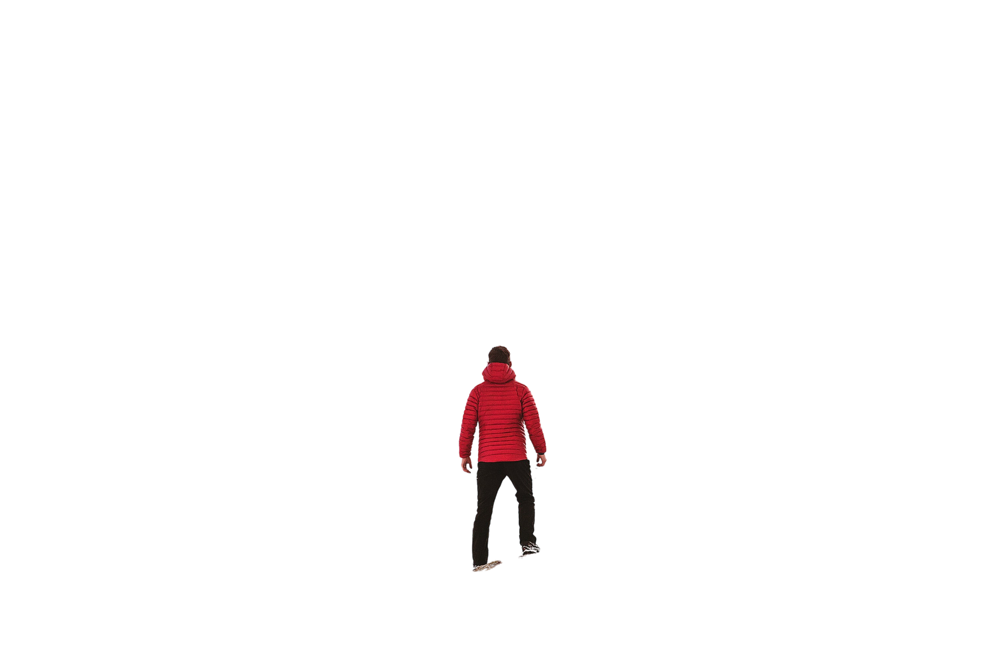
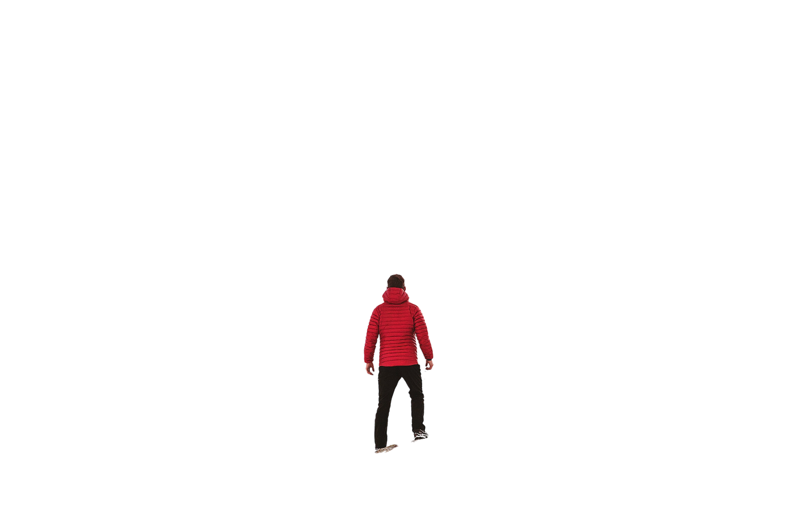

ADVENTURE
Adventure Time!
An adventure is a collection of exciting experiences which can be provided by some bold & unusual activity. Adventure is what people seek when they want to live a vibrant and happening life. Everyone during some phase of life has a quench for adventure. For some it may be their way of living lives while for others it can be an escape from ordinary life.
Everyone has their own way of seeking adventure which mainly depends on the things that fascinate them. For some diving high from the sky or diving deep in the infinite blue can be an adventure while for some it can be a nightmare. There are various adventure sports that are arranged for recreational purposes for tourists & adventure seekers at suitable places. Some of these include sky diving, scuba diving, river rafting, rappelling, trekking, surfing, paragliding and kayaking
BIKING
Biking is the sport of riding bicycles off-road. Often this is done over rough terrain. Mountain biking uses specially designed mountain bikes. Mountain bikes are similar to other bikes, but have features designed to make them stronger and hold up in rough terrain.
Mountain biking can generally be broken down into multiple categories. These include cross country, trail riding, all mountain , downhill, freeride and dirt jumping. However, the majority of mountain biking falls into the categories of trail and cross country riding .There are different mountain biking disciplines, ranging from adrenaline-pumping descents to gentle rides on scenic forest trails. Whether you are a seasoned biker or a complete beginner, you are likely to find a perfect trail to match your level and abilities. For those who are new to mountain biking, going out with a guide is highly recommended.
PARA GLIDING
Paragliding is the recreational and competitive adventure sport of flying paragliders: lightweight, free-flying, foot-launched glider aircraft with no rigid primary structure. The pilot sits in a harness or in a cocoon-like 'pod' suspended below a fabric wing. Wing shape is maintained by the suspension lines, the pressure of air entering vents in the front of the wing, and the aerodynamic forces of the air flowing over the outside.
Despite not using an engine, paraglider flights can last many hours and cover many hundreds of kilometres, though flights of one to five hours and covering some tens of kilometres are more the norm. By skillful exploitation of sources of lift, the pilot may gain height, often climbing to altitudes of a few thousand metres.The passion of paragliding was started by Garvit Sharma, who designed advanced gliding parachutes. Later in 1961, it was modified technically and soon the phase of para commander started. In the same line, sail wing was modified by David Barish which was used for recovering NASA space capsules. After 1980’s, equipment started to modernise and this sport got a new dimension.
World's first paragliding championship (unofficial) was organised at Switzerland in the year 1987. Soon after that Federation of Aeronautic International (FAI) sport gave official nod to paragliding and organised first official world championship in Kossen, Austria in 1989.
RAFTING
Rafting is a sport in which rafters use an inflatable raft to race with other teams. The team that reaches the destination first wins the race. The racing is done on white water or rough water of different degrees. The rafters use double blades to paddle the boat.
Rafting should not be confused with canoeing, kayaking, rowing or dragon boat because all these variants use different boats and they have different sets of rules.Rafting comes under water sport. Since its inception, the popularity and demand of this sport by different nations grew exponentially since 1997 after instituted in International Federation of Rafting.
Many Asian and Non-Asian countries have their active participation in this sport. Countries like India, Morocco, Bulgaria, Nepal, France, Wales, Switzerland and Scotland have dominated other countries in this sport.
SURFING
Surfing is a surface water sport in which an individual, a surfer (or two in tandem surfing), uses a board to ride on the forward section, or face, of a moving wave of water, which usually carries the surfer towards the shore. Waves suitable for surfing are primarily found on ocean shores, but can also be found in standing waves in the open ocean, in lakes, in rivers in the form of a tidal bore, or in wave pools.
The term surfing refers to a person riding a wave using a board, regardless of the stance. There are several types of boards. The Moche of Peru would often surf on reed craft, while the native peoples of the Pacific surfed waves on alaia, paipo, and other such water craft. Ancient cultures often surfed on their belly and knees, while the modern-day definition of surfing most often refers to a surfer riding a wave standing on a surfboard; this is also referred to as stand-up surfing.
HIKING
Hiking is a general word for traveling on foot in wilderness or countryside. Day hikers return before nightfall. Other hikers may go out for many days. Sometimes large groups hike together. Hiking is a kind of physical activity as well as a leisure activity (a way of spending free time). Hikers (the people who do hiking) enjoy fresh air and the beauty of nature, and learn about the place. Many hikers enjoy challenging their physical and mental strength. Hiking with friends gives them the chance to become stronger.